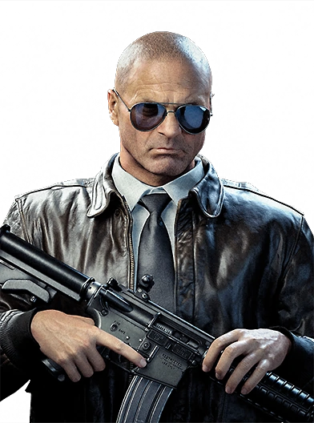

CHARACTER INFORMATION

Jason Hudson was born in Washington D.C. on March 26th, 1932. He was a member of the U.S. Army's 101st Airborne Division and served during the Korean War. He was honorably discharged in 1955. After he left the military, he enrolled at Georgetown University and double majored in psychology and political science.
He was recruited right out of Georgetown University on recommendations from his academic adviser and former O.S.S. field operative Marshall Bryant (a recipient of the Intelligence Star, 1950). Hudson is an excellent tactician and mission coordinator, bringing the full brunt of his genius level I.Q. to the field. As such, he has earned great trust within the halls of Langley and will undoubtedly go far considering his ability to command a room and crisis management skills. As one associate said, "Jason has a way with words; when he speaks, you can't help but listen."
Though much of his work keeps him away from the front lines, Hudson is a very capable soldier, particularly when the mission calls for an element of subtlety and finesse. Hudson flew with Alex Mason to the Pentagon, where they met United States Secretary of Defense Robert McNamara, and then escorted Mason to meet U.S. President John F. Kennedy. Hudson did not participate in the meeting however, as he did not have the security clearance.
By 1968, the Studies and Observations Group was established in Vietnam to investigate the Soviets' presence in and around the area. Hudson worked together with Mason and Frank Woods defending Khe Sanh.
Later, Hudson and Weaver tortured Doctor Daniel Clarke, an engineer who stabilized Nova-6 in Kowloon, Hong Kong. Clarke identifies Nazi scientist Doctor Friedrich Steiner as part of the project, and reveals the location of a hidden facility in Mount Yamantau, before being killed during an attempt to escape Soviet Spetsnaz. Hudson and Weaver head to Mount Yamantau to destroy the facility and apprehend Steiner. Steiner, however, is not there, but informs them of Dragovich's plans, his plan to exchange a way to stop Dragovich for his own safety, and his location.